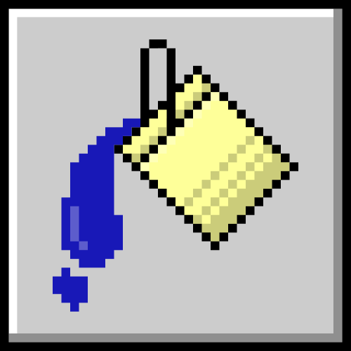

PostGIS • SQL Espacial • Bases de Datos Geográficas • QGIS • PostgreSQL •
PostGIS • SQL Espacial • Bases de Datos Geográficas • QGIS • PostgreSQL •
PostGIS • SQL Espacial • Bases de Datos Geográficas • QGIS • PostgreSQL •
📂 curso_postgis.exe
─
□
✕
Introducción a PostGIS
Datos Espaciales con SQL · Nivel Principiante · En línea
12 – 16 de agosto 2026 · 6:00 PM (hora CDMX) · 2 hrs/sesión · Google Meet
Imparte: Jessica Falcón
📋 formato.txt
✕
100% en línea
5 sesiones en vivo por Google Meet con ejercicios prácticos.
📋 duración.txt
✕
5 días · 10 horas
Mié 12 a dom 16 de agosto. 2 horas por sesión.
📋 nivel.txt
✕

Principiante
No requiere experiencia en SQL ni bases de datos.
📁 temario_completo.exe
─
□
✕
Día 1 · Miércoles
Fundamentos: PostgreSQL y PostGIS
Bloque 1 — ¿Por qué bases de datos espaciales? (60 min)
- Limitaciones de trabajar solo con archivos (shapefiles, GeoJSON)
- Qué es PostgreSQL y qué agrega PostGIS
- Arquitectura cliente-servidor: cómo funciona una base de datos
- Recorrido por pgAdmin: interfaz, conexión al servidor, editor SQL
Bloque 2 — SQL desde cero (60 min)
- Crear una base de datos y habilitar PostGIS:
CREATE EXTENSION postgis - Tipos de datos básicos: texto, numérico, fecha, booleano
- Sentencias fundamentales:
CREATE TABLE,INSERT,SELECT,WHERE - Ordenar y filtrar datos:
ORDER BY,LIMIT,DISTINCT - Ejercicio: tabla de ciudades con consultas básicas
Entregable: Base de datos creada con PostGIS habilitado y tabla de práctica.
Día 2 · Jueves
Geometrías y datos espaciales
Bloque 1 — Tipos de geometría y sistemas de referencia (60 min)
- Modelo de geometrías: Point, LineString, Polygon, MultiPolygon
- Representación de geometrías: WKT (Well-Known Text) y WKB
- Sistemas de coordenadas y SRID: ¿qué es el EPSG?
- Funciones clave:
ST_GeomFromText(),ST_SetSRID(),ST_Transform() - Tabla
spatial_ref_sys: consultar SRIDs disponibles
Bloque 2 — Cargar datos espaciales (60 min)
- Crear tablas con columnas de geometría
- Insertar puntos, líneas y polígonos con SQL
- Importar un shapefile con
shp2pgsqldesde terminal - Importar desde QGIS con DB Manager (método visual)
- Explorar datos:
ST_AsText(),ST_SRID(),ST_GeometryType()
Entregable: Shapefile de municipios importado en PostGIS y verificado.
Día 3 · Viernes
Consultas espaciales
Bloque 1 — Funciones de medición y relación (60 min)
- Medir:
ST_Area(),ST_Length(),ST_Perimeter(),ST_Distance() - Unidades y la importancia de reproyectar (
geographyvsgeometry) - Relaciones topológicas:
ST_Contains(),ST_Within(),ST_Intersects() - Operador
&&y el bounding box
Bloque 2 — Ejercicio práctico con datos reales (60 min)
- Dataset: municipios y localidades de Yucatán
- ¿Qué localidades caen dentro de cada municipio?
- ¿Cuáles son los 5 municipios más grandes por área?
- ¿Qué localidades están a menos de 10 km de Mérida?
- Exportar resultados de una consulta como nueva tabla
Entregable: Script SQL con las consultas resueltas y comentadas.
Día 4 · Sábado
Geoprocesamiento y visualización
Bloque 1 — Operaciones espaciales (60 min)
- Zonas de influencia:
ST_Buffer() - Operaciones de conjunto:
ST_Intersection(),ST_Union(),ST_Difference() - Centroides y envolventes:
ST_Centroid(),ST_Envelope(),ST_ConvexHull() - Spatial join: usar
ST_Intersects()dentro de unJOIN - Agregaciones espaciales:
ST_Union()conGROUP BY
Bloque 2 — Conectar PostGIS con QGIS (60 min)
- Agregar conexión PostGIS en QGIS
- Visualizar tablas y consultas como capas
- Crear vistas (
CREATE VIEW) para consultas frecuentes - Estilizar y exportar mapas desde QGIS con datos de PostGIS
- Discusión: cuándo usar PostGIS vs procesar en QGIS
Entregable: Mapa en QGIS alimentado por consultas de PostGIS.
Día 5 · Domingo
Proyecto integrador y buenas prácticas
Bloque 1 — Mini-proyecto (60 min)
- Problema completo de principio a fin: importar → consultar → geoprocesar → visualizar
- Opción A: Análisis de cobertura de servicios (escuelas, hospitales) por zona
- Opción B: Puntos de interés dentro de áreas protegidas
- Opción C: Densidad de infraestructura por municipio
Bloque 2 — Optimización y cierre (60 min)
- Índices espaciales: qué son y cómo crearlos con
GIST EXPLAIN ANALYZE: verificar que tus consultas usan el índice- Buenas prácticas: nombrado, documentación, respaldos con
pg_dump - Recursos para seguir aprendiendo
- Sesión de preguntas y cierre
Entregable: Proyecto completo documentado en el repositorio personal.
⚙️ requisitos.txt
✕
Conocimientos previos
- Manejo básico de computadora y archivos
- Familiaridad con algún SIG (QGIS, ArcGIS) es útil pero no indispensable
- No se requiere experiencia en SQL ni bases de datos
Software a instalar
- PostgreSQL 16+ con extensión PostGIS 3.4+
- pgAdmin 4
- QGIS 3.34+
📦 incluye.txt
✕
Grabaciones de las 5 sesiones
Repositorio GitHub con scripts y datos
Constancia digital verificable con QR
Datasets reales de práctica
💾 inscripción.exe
─
□
✕
¿Listo para dominar PostGIS?
Aprende bases de datos espaciales desde cero. Inscríbete y asegura tu lugar.
🚀 ¡Inscríbete ahora!Cupo limitado · Constancia de participación incluida